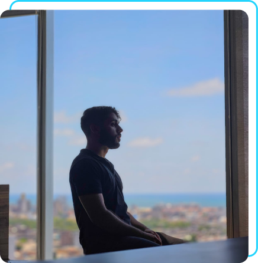

Sobre mim
Profissionalmente descrito como comunicativo, prestativo e capacitado. Formando em ciência da
computação na UFRPE, sou um estudante curioso e determinado. Durante a graduação, tive
experiência no desenvolvimento de diversos projetos. Apesar de estudar mais ativamente a área de
Back-end na linguagem Java com Spring, também tenho conhecimento em projetos que utilizam
ferramentas de front-end como HTML, CSS, JavaScript, TypeScript, Angular e Figma.
Graduando em ciência da computação na Universidade Federal Rural de Pernambuco, iniciado
em novembro de 2022
